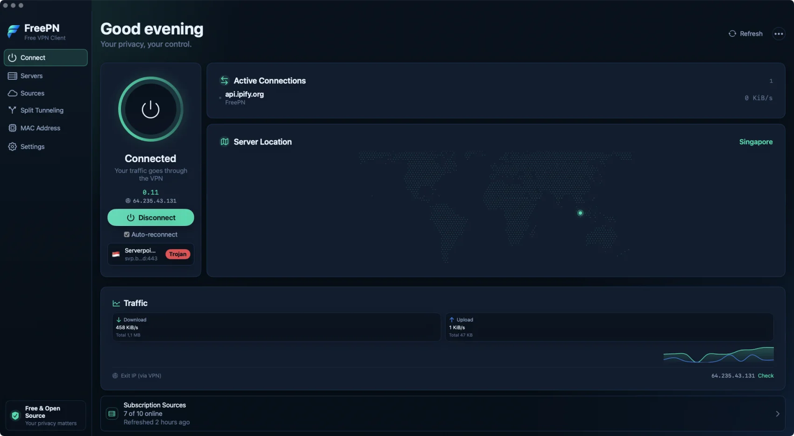
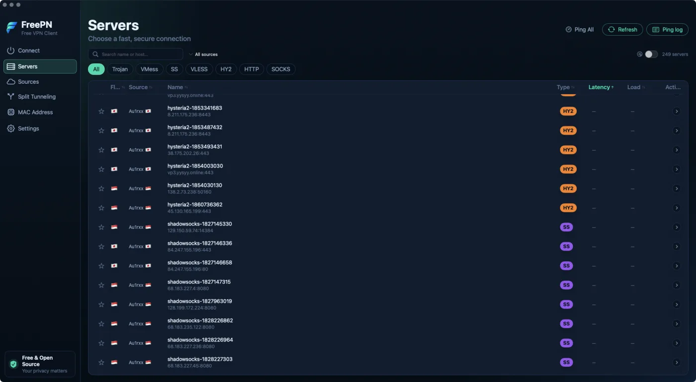
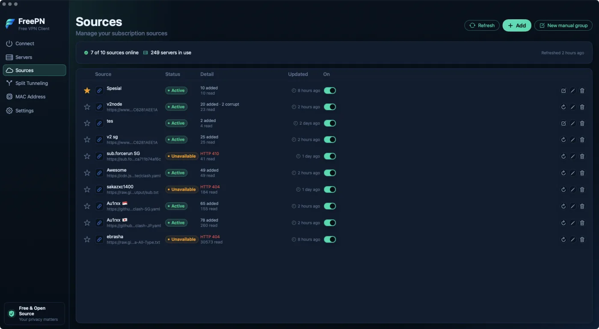
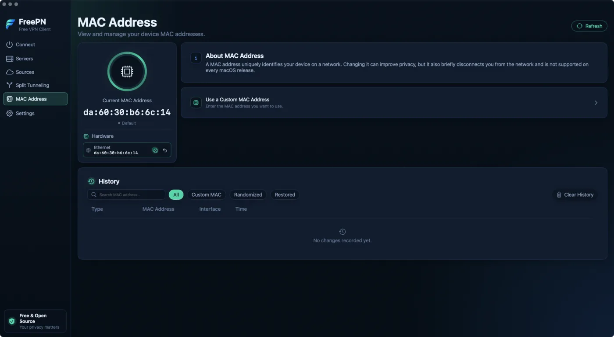
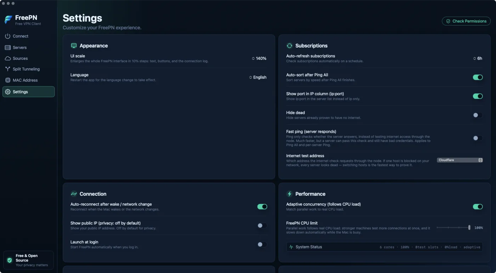
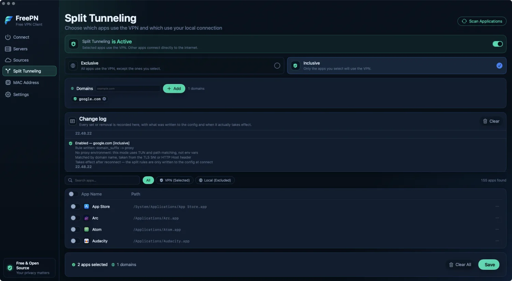

Connected means verified.
Free public VPN feeds, tested for real reachability before they earn your connection. No accounts. No telemetry.

Before it says Connected, it proves it.
Write and validate
Every connect assembles a fresh sing-box config: TUN routing, split rules, DNS. It must pass sing-box check before anything starts.
Start and confirm
The privileged helper launches the core as root. FreePN waits for the process to be alive and the Clash API to answer.
Prove the exit
A request travels through the tunnel's own path to fetch your public IP. If it fails, you get an error. Not a green light.
Dead nodes are marked as dead once they fail a real test. The ring only turns green when traffic actually flows.
The rest of the app.

Servers
Search thousands of nodes, filter by protocol or source, sort by latency, star favorites. Nodes that fail a real test are marked, and can be hidden.

Sources
Paste any subscription URL. Clash YAML, base64 blobs, and raw share links are detected per source, with counts and HTTP errors shown plainly.

MAC Address
Randomize or set a custom MAC, restore the original, and keep a searchable history of every change.

Settings
Refresh schedules, ping mode, CPU limits, UI scale, and the app language. The public IP check stays off until you enable it.
It speaks what free feeds speak.
Protocols
- Trojan
- VMess
- Shadowsocks
- VLESS REALITY
- Hysteria2
- HTTP
- SOCKS5
Detected per node, deduplicated across feeds.
Sources
A fresh install starts with zero sources. Ten curated community feeds wait as one-click chips; pick the ones you trust, or add your own subscription URL. Feeds that rotate their links daily are resolved automatically, up to seven days back.

The change log records what was written to the config, before it can affect a connection.
Decide what rides the tunnel.
Inclusive sends only the apps you choose through the VPN. Exclusive tunnels everything and spares the apps you list. Rules match app bundle paths, so helper processes follow their parent, and individual domains can be routed by name.
Every rule change is written to a change log: what was written, when, and when it takes effect.
MAC address spoofing lives one screen over: randomize on connect, restore on disconnect, full history kept.
How it is built, and what it refuses to do.
The core
- engine
- sing-box 1.13.6 in a universal binary, behind a swappable interface.
- guardrails
- Configs are validated with sing-box check before every connect. A failing config never runs.
- dns
- Proxied DoH for tunneled traffic, system DNS for the rest. Lookups follow the same rules your packets do.
The helper
- privilege
- A small launchd daemon runs the core with the privileges TUN mode needs, and nothing else.
- allowlist
- It answers a fixed list of XPC commands: start, stop, status, version, and MAC get, set, or restore. No shell, no arbitrary paths.
- clients
- Before it answers, the helper verifies the caller's code signature. Anything but FreePN is refused.
Your machine
- accounts
- No sign up, no email, no device ID. Open source under the MIT license.
- telemetry
- Zero analytics, by construction. The only network calls are feed fetches, pings, and an IP check you can leave off.
- storage
- Settings, rules, history: plain JSON under Application Support. Delete the folder and FreePN forgets everything.
574 unit tests ride along in the repository. The interface and this page both read English and Bahasa Indonesia.
Read this before trusting any free node.
FreePN does not run its own servers. It collects feeds that anyone can operate, and a node operator can see unencrypted traffic passing through. Never sign in to banking, your primary email, or anything you cannot afford to lose while connected. This is a tool for reaching the open web, not for hiding who you are.
No free VPN client can change that. FreePN just refuses to pretend otherwise.
Put an honest tunnel on your Mac.
FreePN 1.0 for macOS 13 Ventura and later, on Apple Silicon and Intel.
The download is signed but not notarized. Right-click and Open on first launch. Source builds are one script away.